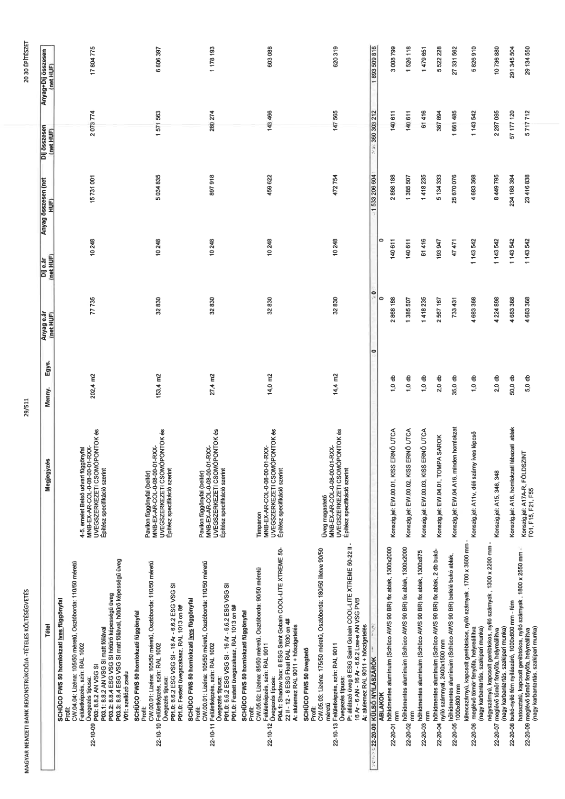

| Tétel | Megjegyzés | Menny. | Egys. | Anyag e.ár (net HUF) | Díj e.ár (net HUF) | Anyag összesen (net HUF) | Díj összesen (net HUF) | Anyag+Díj összesen (net HUF) |
|---|---|---|---|---|---|---|---|---|
| 22-10-09 | 4-5. emelet Belső udvari függönyfal CW.04.04: Lizéna: 105/50 méretű, Osztóborda: 110/50 méretű Felületképzés, szín: RAL 1002 P03: 8.8.2 AN VSG SI P03.1: 8.8.2 AN VSG SI matt fóliával P03.2: 8.8.4 ESG VSG SI hőfokú képességű üveg P01.0: 6.6.2 ESG VSG SI - 16 Ar - 6.6.2 ESG VSG SI V01: szellőző zsalu | 202,4 | m2 | 77 735 | 10 248 | 15 733 564 | 2 074 195 | 17 807 759 |
| 22-10-10 | Pavilon függönyfal (beltér) CW.01: Lizéna: 105/50 méretű, Osztóborda: 110/50 méretű Felületképzés, szín: RAL 1013 on 8# P01.0: 6.6.2 ESG VSG SI - 16 Ar - 6.6.2 ESG VSG SI P01.0: Festett üvegszakasz, RAL 1013 on 8# | 153,4 | m2 | 32 830 | 10 248 | 5 036 122 | 1 572 043 | 6 608 165 |
| 22-10-11 | Pavilon függönyfal (beltér) CW.01: Lizéna: 105/50 méretű, Osztóborda: 110/50 méretű Felületképzés, szín: RAL 1013 on 8# P01.0: 6.6.2 ESG VSG SI - 16 Ar - 6.6.2 ESG VSG SI P01.0: Festett üvegszakasz, RAL 1013 on 8# | 27,4 | m2 | 32 830 | 10 248 | 899 542 | 280 795 | 1 180 337 |
| 22-10-12 | Timpani MNB-EX-AR-COL-08-00-01-RXX-ÜVEGSZERKEZETI CSOMÓPONTOK Építész specifikáció szerint | 14,0 | m2 | 32 830 | 10 248 | 459 620 | 143 472 | 603 092 |
| 22-10-13 | Üveg magastető MNB-EX-AR-COL-08-00-01-RXX-ÜVEGSZERKEZETI CSOMÓPONTOK Építész specifikáció szerint | 14,4 | m2 | 32 830 | 10 248 | 472 752 | 147 571 | 620 323 |
| 22-20-01 | hőhídmentes alumínium (Schüco AWS 90 BR) fix ablak, 1300x2000 mm Konszig.jel: EW.00.01, KISS ERNŐ UTCA | 1,0 | db | 2 868 188 | 140 611 | 2 868 188 | 140 611 | 3 008 799 |
| 22-20-02 | hőhídmentes alumínium (Schüco AWS 90 BR) fix ablak, 1300x2000 mm Konszig.jel: EW.00.02, KISS ERNŐ UTCA | 1,0 | db | 1 385 507 | 140 611 | 1 385 507 | 140 611 | 1 526 118 |
| 22-20-03 | hőhídmentes alumínium (Schüco AWS 90 BR) fix ablak, 1300x875 mm Konszig.jel: EW.00.03, KISS ERNŐ UTCA | 1,0 | db | 1 418 235 | 61 416 | 1 418 235 | 61 416 | 1 479 651 |
| 22-20-04 | hőhídmentes alumínium (Schüco AWS 90 BR) fix ablak, 2 db bukó-nyíló szárnnyal, 2400x1500 mm Konszig.jel: EW.04.01, TOMPA SAROK | 2,0 | db | 2 567 167 | 193 947 | 5 134 333 | 387 894 | 5 522 228 |
| 22-20-05 | hőhídmentes alumínium (Schüco AWS 90 BR) fix ablak, 1000x800 mm Konszig.jel: A14, A16, minden homlokzat | 35,0 | db | 733 431 | 47 471 | 25 670 076 | 1 661 485 | 27 331 562 |
| 22-20-06 | hőhídmentes alumínium, íves szárnyak, 1700 x 3600 mm (nagy karbantartás, szakipari munka) Konszig.jel: A11, déli szárny íves lépcső | 1,0 | db | 4 683 368 | 1 143 542 | 4 683 368 | 1 143 542 | 5 826 910 |
| 22-20-07 | négyszárnyú, kapcsolt gerébtokos, nyíló szárnyak, 1300 x 2200 mm (nagy karbantartás, szakipari munka) Konszig.jel: A15, 346, 348 | 2,0 | db | 4 224 898 | 1 143 542 | 8 449 795 | 2 287 085 | 10 736 880 |
| 22-20-08 | bukó-nyíló fém nyílászáró, 1000x800 mm - fém Konszig.jel: A16, homlokzati lábazati ablak | 50,0 | db | 4 683 368 | 1 143 542 | 234 168 384 | 57 177 120 | 291 345 504 |
| 22-20-09 | hatosztatú, kapcsolt gerébtokos, nyíló szárnyak, 1800 x 2550 mm - fém (nagy karbantartás, szakipari munka) Konszig.jel: A17A-R, FÖLDSZINT F01, F15, F21, F55 | 5,0 | db | 4 683 368 | 1 143 542 | 23 416 838 | 5 717 712 | 29 134 550 |
